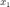
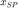
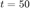
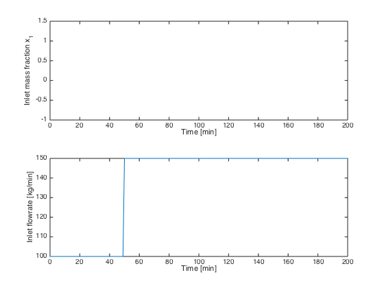
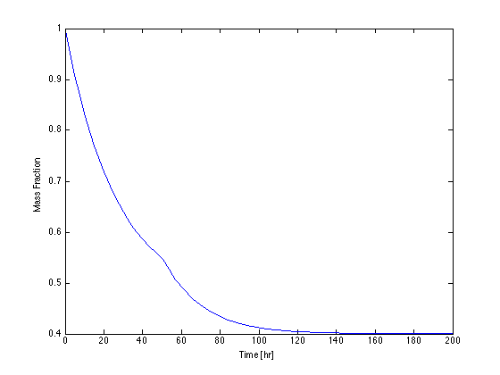
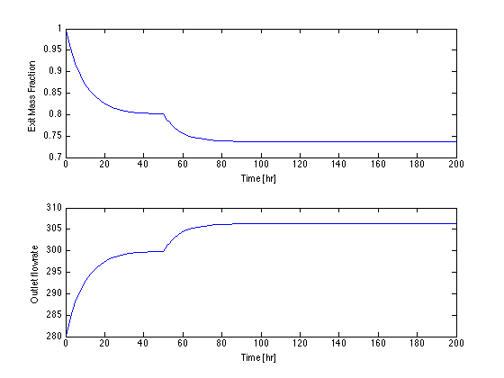

Simulation of a Blending Tank with Proportional Control
File: Ch08_BlendingTankControl.m
A blending tank accepts a flow from from a plant at mass flow rate . The mass fraction of A is . A stream of pure A ( = 1) is blended with the plant stream in a well-mixed tank. The tank is designed to maintain constant volume. The task is to design a control system to maintain the effluent concentration at a desired setpoint .
Contents
Process Diagram
From Plant Pure A
w1,x1 ------ ---|X|-- w2,x2
| |
v v
----------------
| |
| Volume = V |
| |-----> w3,x3
----------------Parameter Values
rho = 1.00; % kg/liter, assume constant V = 4000; % liters
Disturbance Variables (DV)
The disturbances are functions of time. Here we specify a constant value for , and a flowrate with a step change at .
x1 = @(t) 0.2; % Mass fraction w1 = @(t) 100 + (t >= 50).*50; % kg/min t = 0:200; subplot(2,1,1); plot(t,x1(t)); xlabel('Time [min]'); ylabel('Inlet mass fraction x_1'); subplot(2,1,2); plot(t,w1(t)); xlabel('Time [min]'); ylabel('Inlet flowrate [kg/min]');
Manipulated Variable (MV)
w2(t) is the flowrate of the manipulated flow. For the first simulation we'll assume a constant flowrate.
w2 = @(t) 50; % kg/hour
Blending Tank Model
For a simple problem like this one, we'll use an anonymous function to model the tank dynamics.
f = @(t,x) (w1(t)*(x1(t)-x) + w2(t)*(1-x))/rho/V;
Integrate differential equation and plot results
We integrate the model from t = 0 to t = 200 with an initial condition x(0) = 1.
[t,x] = ode45(f,[0,200],1); clf; plot(t,x); xlabel('Time [hr]'); ylabel('Mass Fraction');
Feedback Control
Next we install a feedback controller using proportional control.
Kp = 100; xSP = 0.8; w2offset = w1(0)*(xSP-x1(0))/(1-xSP) w2 = @(t,x) w2offset + Kp*(xSP - x); f = @(t,x) (w1(t)*(x1(t)-x) + w2(t,x)*(1-x))/rho/V; [t,x] = ode45(f,[0,200],1); subplot(2,1,1); plot(t,x); xlabel('Time [hr]'); ylabel('Exit Mass Fraction'); subplot(2,1,2); plot(t,w2(t,x)); xlabel('Time [hr]'); ylabel('Outlet flowrate');
w2offset = 300.0000
Exercises
- Change the control constant from Kp = 100 to Kp = 10000. Is the result realistic? Adjust the control rule so that you're getting realistic values of the outlet flow.
- Implement a feedforward controller.